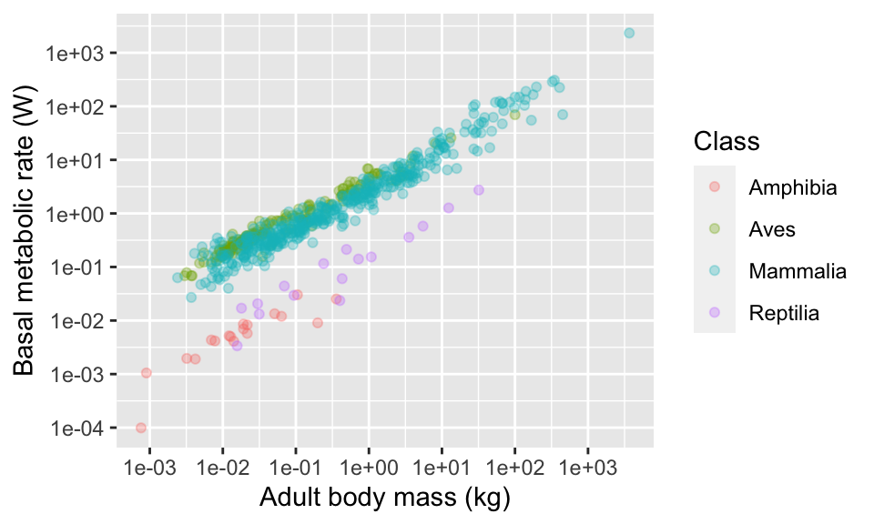

Chapter 7 Exercise: Temperature effects on egg laying dates
Data have been collected on great tits (musvit) at SDU for several years. Your task today is to analyse these data to answer the question: is egg laying date associated with spring temperature? The idea here is that warmer springs will lead to delayed egg laying which could have negative consequences to the population if their caterpillar food source doesn’t keep pace with the change.
You are provided with two data sets: one on the birds and another on weather. You will need to process these using tools in the dplyr package, and combine them (using left_join) for analysis.
The first data set, eggDates.csv, is data from the SDU birds project. The data are arranged in columns where each column is a year and each row is a nest. The data in each column is the day of the year that the first egg in the nest was laid.
These data do NOT fulfill the “tidy data” standard where each variable gets a column. In this case,a single variable (first egg date) gets many columns (one for each year), and column headers are data (the years). The data will need to be processed before you can analyse it.
You will need to use pivot_wider to fix this issue so that you produce a version of the data with three columns - nestNumber, Year and dayNumber.
The second dataset, AarslevTemperature.csv, is a weather dataset from Årslev near Odense. This dataset includes daily temperatures records for several years. You will need to summarise this data to obtain a small dataset that has the weather of interest - average temperature in the months of February to April for each year.
To answer the question, you will need to join these data sets together.
Import the data and take a look at it with
headorstr.Use
pivot_widerto reformat the data. This might take a bit of trial and error - don’t give up!
Maybe this will help: The first argument in the gather command indicates what the columns in the main data represent (i.e. here the column represents “Year”). The second argument is the name you would give to the actual data (i.e. “day”, in this case). The final argument then tells the function which columns of the data are not to be rearranged (i.e. “boxNumber” in this case).
You should end up with a dataset with three columns as described above.
Ensure that year is coded as numeric variable using
mutate. [Hint, you can use the commandas.numeric, but first remove the “y” in the name usinggsub].Calculate the mean egg date per year using
summarise(remember togroup_bythe year first). Take a look at the data.Import the weather data and take a look at it with
headorstr.Use
filtersubset to the months of interest (February-April) and thensummarisethe data to calculate the mean temperature in this period (remember togroup_byyear). Look at the data. You should end up with a dataset with two columns -yearandmeanSpringTemp.Join the two datasets together using
left_join. You should now have a dataset with columnsnestNumber,Year,dayNumberandmeanAprilTempplot a graph of
meanAprilTempon the x-axis anddayNumberon the y-axis.
Now you should be able to answer the question we started with: is laying date associated with spring temperatures.
7.1 Exercise Solutions: Temperature effects on egg laying dates
7.1.1 Preparing the bird data
- Import the data and take a look at it with
headorstr.
eggDates <- read.csv("CourseData/eggDates.csv")head(eggDates)## boxNumber y2013 y2014 y2016 y2017 y2018 y2019
## 1 1 116 103 NA 107 111 NA
## 2 2 NA NA NA 114 118 NA
## 3 3 NA 102 108 NA NA NA
## 4 4 121 103 121 155 111 110
## 5 5 135 100 108 102 106 108
## 6 6 122 113 122 NA 124 149- Use
pivot_longerto reformat the data. This might take a bit of trial and error - don’t give up!
Maybe this will help: The first argument in the gather command indicates what the columns in the main data represent (i.e. here the column represents “Year”). The second argument is the name you would give to the actual data (i.e. “day”, in this case). The final argument then tells the function which columns of the data are not to be rearranged (i.e. “boxNumber” in this case).
You should end up with a dataset with three columns as described above.
eggDates %>%
pivot_longer(cols = c(y2013,y2014,y2016,y2017,y2018,y2019),names_to = c("Year"),values_to = "Day")## # A tibble: 600 x 3
## boxNumber Year Day
## <int> <chr> <int>
## 1 1 y2013 116
## 2 1 y2014 103
## 3 1 y2016 NA
## 4 1 y2017 107
## 5 1 y2018 111
## 6 1 y2019 NA
## 7 2 y2013 NA
## 8 2 y2014 NA
## 9 2 y2016 NA
## 10 2 y2017 114
## # … with 590 more rowsThere is, in fact, an easier way to do this with a “helper function”, starts_with.
eggDates %>%
pivot_longer(cols = starts_with("y"),names_to = c("Year"),values_to = "Day")## # A tibble: 600 x 3
## boxNumber Year Day
## <int> <chr> <int>
## 1 1 y2013 116
## 2 1 y2014 103
## 3 1 y2016 NA
## 4 1 y2017 107
## 5 1 y2018 111
## 6 1 y2019 NA
## 7 2 y2013 NA
## 8 2 y2014 NA
## 9 2 y2016 NA
## 10 2 y2017 114
## # … with 590 more rows- Ensure that year is coded as numeric variable using
mutate. [Hint, you can use the commandas.numeric, but first remove the “y” in the name usinggsub].
eggDates %>%
pivot_longer(cols = starts_with("y"),names_to = c("Year"),values_to = "Day") %>%
mutate(Year = gsub(pattern = "y",replacement = "", x = Year)) %>%
mutate(Year = as.numeric(Year))## # A tibble: 600 x 3
## boxNumber Year Day
## <int> <dbl> <int>
## 1 1 2013 116
## 2 1 2014 103
## 3 1 2016 NA
## 4 1 2017 107
## 5 1 2018 111
## 6 1 2019 NA
## 7 2 2013 NA
## 8 2 2014 NA
## 9 2 2016 NA
## 10 2 2017 114
## # … with 590 more rows- Calculate the mean egg date per year using
summarise(remember togroup_bythe year first). Take a look at the data.
eggDates %>%
pivot_longer(cols = starts_with("y"),names_to = c("Year"),values_to = "Day") %>%
mutate(Year = gsub(pattern = "y",replacement = "", x = Year)) %>%
mutate(Year = as.numeric(Year)) %>%
group_by(Year) %>%
summarise(meanEggDate = mean(Day,na.rm = TRUE))## # A tibble: 6 x 2
## Year meanEggDate
## <dbl> <dbl>
## 1 2013 125.
## 2 2014 108.
## 3 2016 115.
## 4 2017 112.
## 5 2018 117.
## 6 2019 111.You should now remember to create a new object to hold the result of this sequence of pipes.
meanEggDates <- eggDates %>%
pivot_longer(cols = starts_with("y"),names_to = c("Year"),values_to = "Day") %>%
mutate(Year = gsub(pattern = "y",replacement = "", x = Year)) %>%
mutate(Year = as.numeric(Year)) %>%
group_by(Year) %>%
summarise(meanEggDate = mean(Day,na.rm = TRUE))7.1.2 Preparing the weather data
- Import the weather data and take a look at it with
headorstr.
weather <- read.csv("CourseData/AarslevTemperature.csv")- Use
filtersubset to the months of interest (February-April) and thensummarisethe data to calculate the mean temperature in this period (remember togroup_byyear). Look at the data. You should end up with a dataset with two columns -yearandmeanSpringTemp.
weather <- weather %>%
filter(MONTH %in% 2:4) %>%
group_by(YEAR) %>%
summarise(meanAprilTemp = mean(TEMP))
weather## # A tibble: 8 x 2
## YEAR meanAprilTemp
## <int> <dbl>
## 1 2012 7.86
## 2 2013 1.60
## 3 2014 6.03
## 4 2015 3.53
## 5 2016 4.50
## 6 2017 4.77
## 7 2018 3.07
## 8 2019 6.127.1.3 Joining the two datasets
- Join the two datasets together using
left_join. You should now have a dataset with columnsnestNumber,Year,dayNumberandmeanAprilTemp
joinedData <- left_join(meanEggDates,weather,c("Year" = "YEAR"))
head(joinedData)## # A tibble: 6 x 3
## Year meanEggDate meanAprilTemp
## <dbl> <dbl> <dbl>
## 1 2013 125. 1.60
## 2 2014 108. 6.03
## 3 2016 115. 4.50
## 4 2017 112. 4.77
## 5 2018 117. 3.07
## 6 2019 111. 6.127.1.4 Plot the data
- plot a graph of
meanAprilTempon the x-axis anddayNumberon the y-axis.
plot(joinedData$meanAprilTemp,joinedData$meanEggDate)
Now you should be able to answer the question we started with: is laying date associated with spring temperatures.